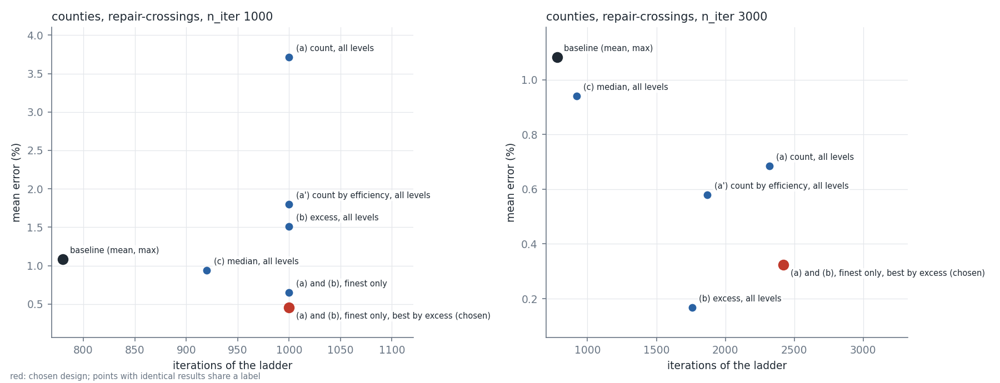
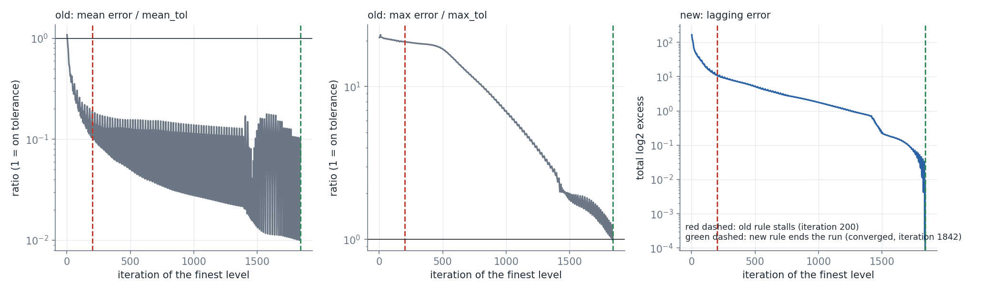

Four candidate progress measures for the stall rule (count of regions above max_tol, the same by efficiency, the total log2 excess over the tolerance, the median of the lagging regions) were run in the library on the county ladder (repair-crossings and check), districts, states and strip scenes. Applied on all ladder levels they use the budget on the coarse levels; on the finest level only, the count and the excess behave alike (counties, repair-crossings, budget 3000, no invalid polygons at the stall: CONVERGED after 1842 iterations, mean 0.32 %, none above 10 %), the excess also continues in check mode, and choosing the best iterate by the same excess measure improves the returned iterate. The median does not help. Districts and states are unchanged.
trace.py records the three measures at every iteration of the chosen design (counties, repair-crossings, n_iter 3000) and trace_fig.py plots them and replays the old rule on the recorded values; compare.py runs the candidates (an experimental option, removed again), final.py the shipped design, tables.py builds the table and the figure.
All judge the cycle minimum like the mean and max components (progress if it falls by the fraction stall_min_efficiency * moved):
max_tol (a variant: any fall by 1 or more, and one by the efficiency rule);max_tol (plus the excess of the mean over mean_tol, times the number of regions);max_tol."All levels" applies the component on every ladder level; "finest level only" only on the finest. "Best by excess" returns the iterate with the lowest excess instead of the lowest mean/max score.
| validity | budget | design | iterations | levels (status, iterations) | invalid | mean % | median % | max % | above 10 % | above 5 % |
|---|---|---|---|---|---|---|---|---|---|---|
| repair-crossings | 1000 | baseline (mean, max) | 780 | stal 500 / stal 80 / stal 200 | 0 | 1.08 | 0.20 | 548 | 45 | 84 |
| repair-crossings | 1000 | (a) count above max_tol, all levels | 1000 | stal 840 / comp 160 | 1 | 3.71 | 0.27 | 543 | 247 | 408 |
| repair-crossings | 1000 | (b) excess, all levels | 1000 | stal 500 / stal 360 / comp 140 | 0 | 1.51 | 0.20 | 515 | 74 | 127 |
| repair-crossings | 1000 | (c) median of lagging, all levels | 920 | stal 500 / stal 100 / stal 320 | 0 | 0.94 | 0.24 | 517 | 26 | 51 |
| repair-crossings | 1000 | (a) count, finest level only | 1000 | stal 500 / stal 80 / comp 420 | 0 | 0.65 | 0.14 | 496 | 16 | 27 |
| repair-crossings | 1000 | (b) excess, finest level only | 1000 | stal 500 / stal 80 / comp 420 | 0 | 0.65 | 0.14 | 496 | 16 | 27 |
| repair-crossings | 1000 | (a) count, finest only, best by excess | 1000 | stal 500 / stal 80 / comp 420 | 0 | 0.46 | 0.04 | 497 | 16 | 26 |
| repair-crossings | 1000 | (b) excess, finest only, best by excess = chosen | 1000 | stal 500 / stal 80 / comp 420 | 0 | 0.46 | 0.04 | 497 | 16 | 26 |
| repair-crossings | 3000 | baseline (mean, max) | 780 | stal 500 / stal 80 / stal 200 | 0 | 1.08 | 0.20 | 548 | 45 | 84 |
| repair-crossings | 3000 | (a) count above max_tol, all levels | 2320 | stal 840 / stal 580 / stal 900 | 10 | 0.69 | 0.32 | 48 | 12 | 20 |
| repair-crossings | 3000 | (b) excess, all levels | 1760 | stal 500 / stal 360 / stal 900 | 2 | 0.17 | 0.02 | 69 | 6 | 15 |
| repair-crossings | 3000 | (c) median of lagging, all levels | 920 | stal 500 / stal 100 / stal 320 | 0 | 0.94 | 0.24 | 517 | 26 | 51 |
| repair-crossings | 3000 | (a) count, finest level only | 2422 | stal 500 / stal 80 / conv 1842 | 1 | 0.32 | 0.18 | 10 | 0 | 2 |
| repair-crossings | 3000 | (b) excess, finest level only | 2422 | stal 500 / stal 80 / conv 1842 | 1 | 0.32 | 0.18 | 10 | 0 | 2 |
| repair-crossings | 3000 | (a) count, finest only, best by excess | 2422 | stal 500 / stal 80 / conv 1842 | 1 | 0.32 | 0.18 | 10 | 0 | 2 |
| repair-crossings | 3000 | (b) excess, finest only, best by excess = chosen | 2422 | stal 500 / stal 80 / conv 1842 | 1 | 0.32 | 0.18 | 10 | 0 | 2 |
| check | 1000 | baseline (mean, max) | 820 | stal 540 / stal 110 / stal 170 | 57 | 1.37 | 0.25 | 523 | 60 | 86 |
| check | 1000 | (a) count above max_tol, all levels | 1000 | comp 1000 | 15 | 14.46 | 1.22 | 865 | 763 | 1023 |
| check | 1000 | (b) excess, all levels | 1000 | stal 580 / comp 420 | 38 | 5.38 | 0.72 | 628 | 298 | 485 |
| check | 1000 | (c) median of lagging, all levels | 940 | stal 540 / stal 230 / stal 170 | 57 | 1.37 | 0.25 | 523 | 60 | 86 |
| check | 1000 | (a) count, finest level only | 820 | stal 540 / stal 110 / stal 170 | 57 | 1.37 | 0.25 | 523 | 60 | 86 |
| check | 1000 | (b) excess, finest level only | 1000 | stal 540 / stal 110 / comp 350 | 57 | 1.37 | 0.25 | 523 | 60 | 86 |
| check | 1000 | (a) count, finest only, best by excess | 820 | stal 540 / stal 110 / stal 170 | 60 | 1.01 | 0.03 | 544 | 58 | 80 |
| check | 1000 | (b) excess, finest only, best by excess = chosen | 1000 | stal 540 / stal 110 / comp 350 | 64 | 0.56 | 0.00 | 557 | 32 | 61 |
| check | 3000 | baseline (mean, max) | 820 | stal 540 / stal 110 / stal 170 | 57 | 1.37 | 0.25 | 523 | 60 | 86 |
| check | 3000 | (a) count above max_tol, all levels | 1700 | stal 1160 / stal 370 / stal 170 | 57 | 1.37 | 0.25 | 523 | 60 | 86 |
| check | 3000 | (b) excess, all levels | 1740 | stal 580 / stal 630 / stal 530 | 71 | 0.40 | 0.00 | 519 | 17 | 37 |
| check | 3000 | (c) median of lagging, all levels | 940 | stal 540 / stal 230 / stal 170 | 57 | 1.37 | 0.25 | 523 | 60 | 86 |
| check | 3000 | (a) count, finest level only | 820 | stal 540 / stal 110 / stal 170 | 57 | 1.37 | 0.25 | 523 | 60 | 86 |
| check | 3000 | (b) excess, finest level only | 1180 | stal 540 / stal 110 / stal 530 | 71 | 0.40 | 0.00 | 519 | 17 | 37 |
| check | 3000 | (a) count, finest only, best by excess | 820 | stal 540 / stal 110 / stal 170 | 60 | 1.01 | 0.03 | 544 | 58 | 80 |
| check | 3000 | (b) excess, finest only, best by excess = chosen | 1180 | stal 540 / stal 110 / stal 530 | 70 | 0.42 | 0.00 | 528 | 18 | 44 |
The shipped design (excess, finest level only, best by excess), final.py, with the old rule (wait_for_lagging_regions False) beside it:
| validity | budget | wait_for_lagging_regions | iterations | levels | invalid | mean % | above 10 % | returned vs final iterate above 10 % (finest) |
|---|---|---|---|---|---|---|---|---|
| repair-crossings | 500 | False / True | 500 / 500 | one level, budget used by the coarse level | 0 / 0 | 14.09 / 14.09 | 744 / 744 | |
| repair-crossings | 1000 | False | 780 | stal 500 / stal 80 / stal 200 | 0 | 1.08 | 45 | 46 / 46 |
| repair-crossings | 1000 | True | 1000 | stal 500 / stal 80 / comp 420 | 0 | 0.46 | 16 | 17 / 18 |
| repair-crossings | 3000 | True | 2422 | stal 500 / stal 80 / conv 1842 | 1 | 0.32 | 0 | 0 / 0 |
| check | 1000 | False | 820 | stal 540 / stal 110 / stal 170 | 57 | 1.37 | 60 | 74 / 71 |
| check | 1000 | True | 1000 | stal 540 / stal 110 / comp 350 | 64 | 0.56 | 32 | 45 / 45 |
| check | 3000 | True | 1180 | stal 540 / stal 110 / stal 530 | 70 | 0.42 | 18 | 29 / 27 |
CONVERGED after 135 and 65 iterations with and without the component, with identical errors.n_iter; seed 19 converges). The best iterate by excess has the lower mean error in 10 of 12 pairs (seed 7: 6.06 to 1.66 %) and a higher max in 9 (seed 31: 3712 to 4052 %), and one pair (seed 11, repair-crossings) returns 1 invalid polygon where the baseline returns 0. These scenes are chaotic by construction (two regions with 0.3 % of the target).n_iter is the total), the coarse level 512 keeps improving its unresolvable sub-cell regions and uses 840 to 1000 of the 1000 iterations in four of the "all levels" runs (mean error 1.8 to 14.5 % against 1.08 %)."repair-crossings" can end with a few invalid polygons (1 at 3000 iterations on counties; 6 to 10 in the all-level runs).
Counties, repair-crossings: mean error against the iterations of the ladder for each design, at a budget of 1000 and of 3000 iterations. Red: the chosen design.

The finest county level (grid 2048) of the chosen design, per iteration: the mean error ratio and the max error ratio (the two measures of the old rule) and the lagging error (the new one). Red dashed: the iteration at which the old rule, replayed on the same values, stalls (200). Green dashed: where the run ends with the new rule (CONVERGED, 1842).